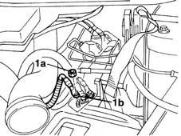
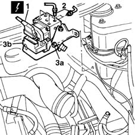

3340A12 A'B.S. system. - electronic and hydraulic CONTROL UNIT R.R.
- Path
- Procedures > 33 BRAKING SYSTEM > 3340 A(B.S. ANTI-LOCK BRAKING SYSTEM .) > 3340A abs check/adjustment devices > 3340A12 A'B.S. system. - electronic and hydraulic CONTROL UNIT R.R.
- Kind
- repair procedure (removal / refitting; the operation number is the code)
- Applies to
- all engines; all production periods
- Interactive page
- https://sloeber94.github.io/elrnDB-fMltpl/en/#/2891643
Applies to: all engines; all production periods
 Removing
Removing
 Refitting
Refitting1048A10 AIR CLEANER FILTERING ELEMENT - REPLACE
5530B52 Battery DRIP TRAY/SUPPORT - R.R.
Drain the brake-clutch fluid from the reservoir using a suitable syringe.
1. Undo nuts (1a) and release cable (1b) from the battery positive terminal.

Applies to: all engines; all production periods
1. Disconnect the comb connector from the A.B.S. hydraulic and electronic control unit.
2. Disconnect the hose fittings from the A.B.S. hydraulic and electronic control unit.
3. Undo nuts (3a) and remove A.B.S. hydraulic and electronic control unit (3b) together with its mount.
 | Name | Connector |
|---|---|---|
1 | ABS control unit |

Applies to: all engines; all production periods
Refitting
RemovingFit the mount and A.B.S. hydraulic and electronic control unit in its seat and tighten the nuts to the specified torque.
 | Fastening | Component | Ø | Value (daNm) |
|---|---|---|---|---|
- | Nut | ABS CONTROL UNIT SUPPORT | M8 | 2.4 |
Connect the connectors to the hydraulic and electronic control unit and tighten to torque.
| Fastening | Component | Ø | Value (daNm) |
|---|---|---|---|---|
- | Connector | ABS CONTROL UNIT RIGID FRONT BRAKE PIPES../ | M10 | 1.4 |
| Fastening | Component | Ø | Value (daNm) |
|---|---|---|---|---|
- | Connector | ABS CONTROL UNIT RIGID REAR BRAKE PIPES../ | M10 | 1.4 |
| Fastening | Component | Ø | Value (daNm) |
|---|---|---|---|---|
- | Connector | RIGID BRAKE PIPES TO BRAKE PUMP MASTER CYLINDER. | M10 | 1.4 |
| Fastening | Component | Ø | Value (daNm) |
|---|---|---|---|---|
- | Connector | RIGID BRAKE PIPES TO BRAKE PUMP MASTER CYLINDER. | M12 | 1.4 |
Connect the hydraulic control unit comb connection.
| Name | Connector |
|---|---|---|
- | ABS control unit |
Reconnect the battery positive terminal.
3330A10 BRAKE FLUID - Check level and top up, if necessary.
3330A14 HYDRAULIC BRAKING SYSTEM - Bleed air
Topics linked from this page (6)
- 1048A10 AIR CLEANER FILTERING ELEMENT - REPLACE
- 3330A10 BRAKE FLUID - Check level and top up, if necessary.
- 3330A14 HYDRAULIC BRAKING SYSTEM - Bleed air
- 5530B10 battery - r+r
- 5530B52 Battery DRIP TRAY/SUPPORT - R.R.
- M50 ABS control unit
Topics that link to this page (8)
- F01 POOR BRAKING ACTION
- F02 REAR WHEELS LOCK WHILST BRAKING
- F12 BRAKE PEDAL HARD
- F20 ABS WORKING IRREGULARLY
- F21 ABS NOT WORKING / (ONE WHEEL LOCKED)
- H02 DRIFT WHILST BRAKING
- 3330D14 brake servo - r+r for versions with abs - includes separation from master cylinder (pump)
- 3340A13 abs central mount - r r